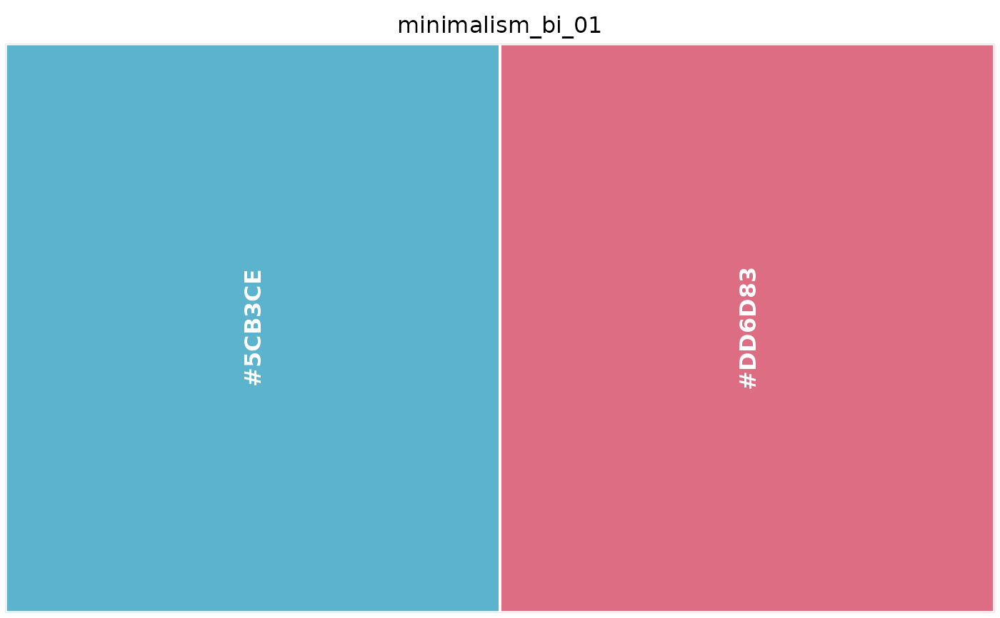

The 28 palettes of the Minimalism collection, each a character vector of hex colours in printed swatch order.
Usage
minimalism_bi_01
minimalism_bi_02
minimalism_bi_03
minimalism_bi_04
minimalism_bi_05
minimalism_bi_06
minimalism_bi_07
minimalism_bi_08
minimalism_bi_09
minimalism_bi_10
minimalism_bi_11
minimalism_bi_12
minimalism_tri_01
minimalism_tri_02
minimalism_four_01
minimalism_four_02
minimalism_four_03
minimalism_four_04
minimalism_four_05
minimalism_four_06
minimalism_four_07
minimalism_four_08
minimalism_multi_01
minimalism_multi_02
minimalism_multi_03
minimalism_multi_04
minimalism_multi_05
minimalism_multi_06Format
A character vector of hex colour strings.
minimalism_bi_01: bicolor, 2 colours (#5CB3CE, #DD6D83).
minimalism_bi_02: bicolor, 2 colours (#8FC322, #E07F01).
minimalism_bi_03: bicolor, 2 colours (#EF8787, #F7E4E0).
minimalism_bi_04: bicolor, 2 colours (#FFFFFF, #D2A364).
minimalism_bi_05: bicolor, 2 colours (#0053A5, #92D2E1).
minimalism_bi_06: bicolor, 2 colours (#BF556C, #E3D2B4).
minimalism_bi_07: bicolor, 2 colours (#02589F, #8EADBF).
minimalism_bi_08: bicolor, 2 colours (#C1A76C, #182B82).
minimalism_bi_09: bicolor, 2 colours (#35844B, #DCE89F).
minimalism_bi_10: bicolor, 2 colours (#2F8BB6, #CFE5EC).
minimalism_bi_11: bicolor, 2 colours (#D7B792, #000000).
minimalism_bi_12: bicolor, 2 colours (#000000, #FFFFFF).
minimalism_tri_01: tricolor, 3 colours (#004292, #8DB1DE, #00A0CF).
minimalism_tri_02: tricolor, 3 colours (#570018, #E8D3C7, #924515).
minimalism_four_01: four-color, 4 colours (#DC548A, #4EBBA4, #895CA0, #DED970).
minimalism_four_02: four-color, 4 colours (#ECCBAF, #DED6AF, #F2E9E7, #E8B5A9).
minimalism_four_03: four-color, 4 colours (#FFFFFF, #329C9B, #8DC2CA, #EC6B55).
minimalism_four_04: four-color, 4 colours (#BD9A58, #A2D1D9, #E5BABD, #8B4E9B).
minimalism_four_05: four-color, 4 colours (#C2A952, #99B588, #DB8B96, #4A517F).
minimalism_four_06: four-color, 4 colours (#F1B1CE, #E7D3BD, #0367AF, #004B29).
minimalism_four_07: four-color, 4 colours (#F1B1CE, #E61917, #E7D3BD, #954122).
minimalism_four_08: four-color, 4 colours (#D48CBA, #009EB4, #515171, #BA955E).
minimalism_multi_01: multicolor, 6 colours (#EADAB9, #BE2920, #FCE2DC, #B8E4ED, #B6B946, #B9BCC1).
minimalism_multi_02: multicolor, 7 colours (#E66A5F, #EDC2B6, #CBB493, #9E809B, #395642, #BFE3E7, #CEBD35).
minimalism_multi_03: multicolor, 5 colours (#405C4F, #3DBABE, #7FB8DE, #DBB79E, #E6474C).
minimalism_multi_04: multicolor, 6 colours (#ECE8E2, #C6865D, #119F57, #E58F44, #00A3D3, #C81A43).
minimalism_multi_05: multicolor, 7 colours (#5BAE7F, #B1C06B, #EDDE7B, #DE785E, #5AA9D2, #8273AC, #EE86AE).
minimalism_multi_06: multicolor, 7 colours (#E29154, #63C2C7, #E88F93, #EDD73D, #6469AF, #77B6E4, #93705B).
Examples
minimalism_bi_01
#> [1] "#5CB3CE" "#DD6D83"
show_palette(minimalism_bi_01)
